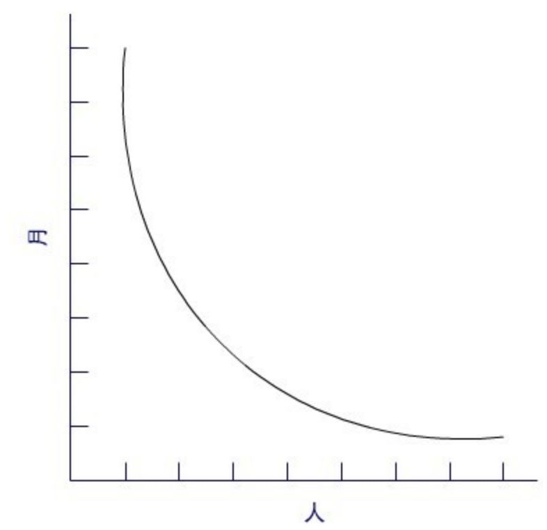
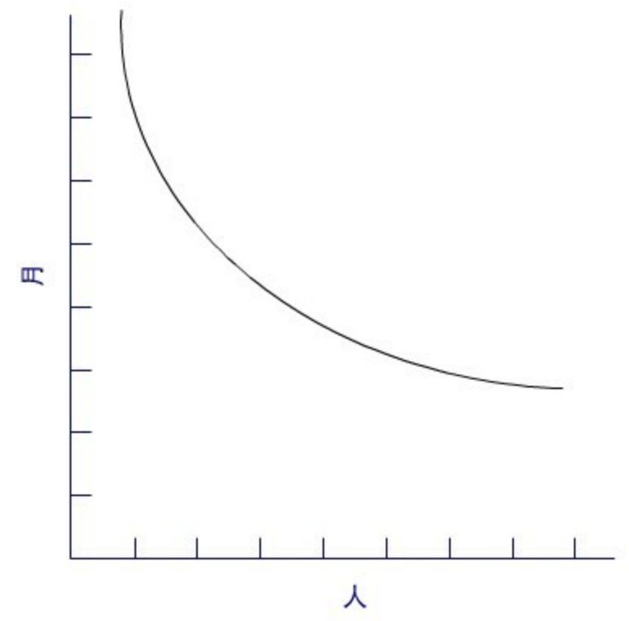
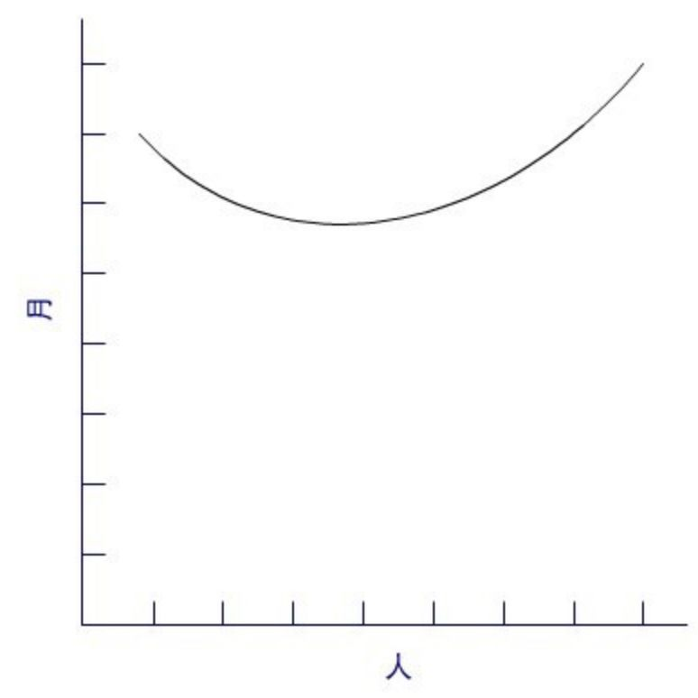
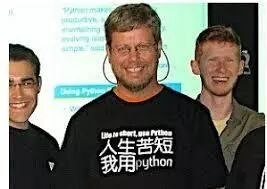

-----点击蓝字高小猫关注我-----
-----点击蓝字高小猫关注我-----
《人月神话》是由IBM System/360系统之父佛瑞德·布鲁克斯所写的一本经典，被誉为软件领域的圣经。书中主要讲述了在软件工程，项目管理过程中会出现的问题，以及其对应的解决方案。
虽然书早在1975年就已经写成，但书中对软件产业的思考极为深入，对整个产业后市的影响也非常深远。
我们今天在软件产业中看到的一些司空见惯的事情，其实都有其背后的原因。曾经有人碰到了一些棘手的问题，并且深入地分析了这些问题，并且给出了一些不错的答案。
为什么软件开发中，增加人手并不能加快项目进展速度？
如果你正在开发的一个项目延期了，怎么办？很多人下意识的方法就是增加人手。如果一个项目一个人需要花两个月做完，那按理来说两个人做的应该只要花一个月，不是吗?
很多时候，事情并非如此。
布鲁克斯指出，人数和时间的互换仅仅适用于以下情况：某个任务可以分解给参与人员，并且他们之间不需要相互的交流。这样的情况下人数与时间成反比。

Case1：不需要交流
对于可以分解，但子任务之间需要沟通和交流的任务，必须在计划工作中考虑沟通的额外工作量，除非：
一般情况下还是要沟通的，而沟通分为两部分：
一部分是用于培训上的沟通，沟通的成本随着人员数量线性增长。
另外一部分是成员之间的协作过程中的沟通，如果任务的每一部分都要跟其它所有部分协作，则沟通成本按照n(n - 2) / 2增长。
在大多数情况下，由于增加了沟通的工作量，增加人手带来的好处必然会被抵消一部分，如下图所示。

Case 2： 需要一定量的沟通
在某些极端的情况下，甚至增加的用于沟通的工作量可能会完全抵消人员的增加所带来的好处，导致加了人反而更慢了。

Case 3： 需要大量沟通
总之，项目来不及的时候，千万不要乱加人。
向进度落后的项目中增加人手，只会使进度更加落后。
———Brooks法则
如何安排软件任务的进度？
布鲁克斯有一个使用了很多年的经验法则：
1/3 计划
1/6 写代码
1/4 构件测试和早期系统测试
1/4 系统测试，所有构件已完成
通常来说人们在编程这件事情上总是过分乐观，因此很少会在测试上留足时间。
虽然为测试留下一半的时间听起来有点多，不过布鲁克斯发现，在他的实际项目经验中，大多数项目的测试都花费了进度中一半的时间。一个项目的延期往往并不是程序员估错了写代码所需要的时间，而是在后续的测试中预留的时间不够。
编程工作量与代码数量成正比？
即使我们去掉了沟通成本，去掉了测试所花的时间，而仅仅估计写代码所需的时间，我们还是往往会估错。
你以为写2000行代码所花的时间是写1000行代码的两倍？
Nasus和Farr在System Development Corporation公司做了一项研究，发现了如下公式：
工作量 = （常数）* （代码量）^ 1.5
这里的常数可以想象跟任务本身的复杂度和困难程度有关，书中提到编译器代码的难度是批处理程序的三倍，而操作系统代码的难度又是编译器代码的三倍。
书中还提到，使用适当的高级语言，编程的生产率可以提高5倍！ 似乎当年还是汇编甚至更加底层语言统治的时代。

——
Brooks在书中还谈到很多别的东西，设计文档的原型，架构师的起源，程序设计中的时间与空间的trade off等等，感兴趣的话，可以找来看看。
文：高小猫 / 微信号：gaoxiaomao88